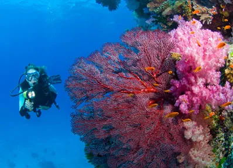
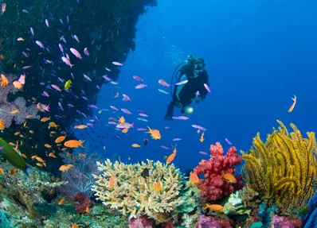
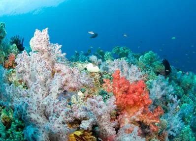

Travel
-

Gale Reef
Discover one of the most distinctive deep-water dive sites off Colombo, Sri Lanka. At South Gale Reef, Gorgonian Gardens spreads across a flat seabed approximately 35 meters below the surface, where large colonies of gorgonian sea fans create the appearance of an underwater forest. Schools of redtooth triggerfish add movement and color throughout the reef.
This is a rewarding destination for experienced divers who want to see something beyond a typical shallow coral reef. Strong currents and the depth make professional planning essential, so arrange the trip with a qualified Colombo dive operator, confirm current conditions, carry the required surface marker buoy, and help protect the sea fans by using operators that do not anchor on the reef.
-

Dawson’s Reef
Just southeast of Cooktown in Far North Queensland, Dawson Reef offers a close-to-shore way to experience the Great Barrier Reef region. Marine-park maps identify it as reef 15-051 near the Annan and Endeavour river systems, making Cooktown a practical starting point for reaching the area by boat.
Local operators visit Dawson Reef for reef fishing, with coral trout, nannygai, tuna, and mackerel among the species associated with the area. The Australian Institute of Marine Science also monitors water quality here, including turbidity and chlorophyll levels. Book with a Cooktown operator who understands current zoning, weather, fishing rules, and reef-protection requirements.
-

Claire’s Reef
Claire’s Reef lies within Bermuda’s North Lagoon at approximately 32.4094° north and 64.8410° west. The top of this lagoonal patch reef rises to about three meters below the surface, placing it within Bermuda’s broad network of shallow northern reefs and clear lagoon waters.
The surrounding reef ecosystem supports hard corals, reef fish, sponges, mollusks, crustaceans, and other marine life. A locally guided boat or snorkeling excursion is the best way to explore Bermuda’s North Lagoon while learning which sites are suitable on the day of the trip. Ask the operator about access to Claire’s Reef, visibility, weather, and reef-safe practices before departing.